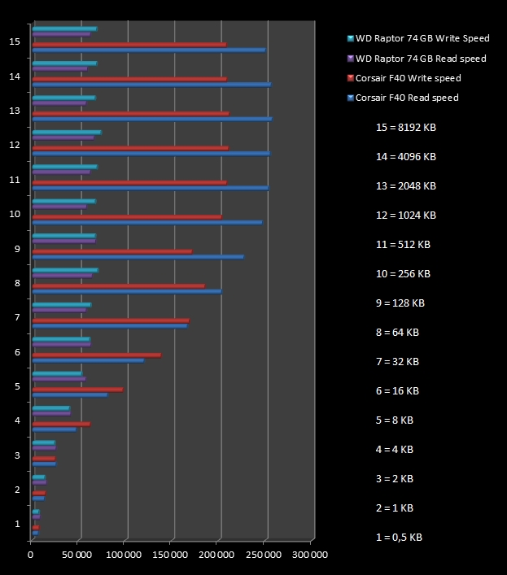

Egne tester og erfaringer med SSD
Informasjon om testene
Her finner du resultatene av tester foretatt av oss bak nettstedet. Vi har foreløpig testet en "vanlig" harddisk,
og en SSD. Spesifikasjoner til enhetene finner du under.
Western Digital Raptor
- Hard Disk Drive
- 3.5"
- 74 GB
- 10 000 RPM
- 16 MB cache
- SATA 1.5 Gb/s
Corsair Force Series F40
- Solid State Drive
- 2.5"
- 40 GB
- TRIM-støtte
- SATA 3 Gb/s
Testene er utført i HD Tune Pro, versjon 4.60
Lese- og skrivehastighet
I den første testen blir det skrevet og lest av en 64 MB stor fil enhetene. Filen på 64 MB blir i testen delt opp i mindre blokker, eller "blocks".
Under kan du se resultatene fra testen. Merk at på y-aksen skulle det egentlig stått "block size" i steden for 1-15. Med block size menes hvor store blokker (hvor mye data)
som blir skrevet til disken samtidig. Tallene 1-15 skal derfor ses på som tallene 0,5-8192.
Block Size (tallene i y-aksen) er oppgitt i KB, og tallene i x-aksen er oppgitt i KB/s.
For å gjøre det litt enklere å leste testen, har jeg skrevet opp hva tallene 1-15 representerer.
(Forts. under diagrammet.)

(Klikk på bildet for å forstørre det.)
Som vi ser så har selv ikke Raptor-disken med sine 10 000 RPM noe å stille opp med mot SSD-enheten.
IOPS
IOPS-testen måler inn/ut-operasjoner per sekund ved gitte filstørrelser. Liste under.
WD Raptor, IOPS
- 512 bytes - 96 IOPS
- 4 KB - 102 IOPS
- 64 KB - 88 IOPS
- 1 MB - 31 IOPS
Corsair F40, IOPS
- 512 bytes - 10261 IOPS
- 4 KB - 8541 IOPS
- 64 KB - 2580 IOPS
- 1 MB - 202 IOPS
Her kommer nederlagene tett for harddisken. I IOPS-testen er Raptor-disken fullstendig underlagt SSDen,
som kommer opp i over 100 ganger flere IO-operasjoner i sekundet.
Gjennomsnittlig aksesstid
Aksesstid er den tiden det går med til å overføre en bestemt menge data fra en lagringsenhet + eventuell ventetid.
I en vanlig harddisk er dette en sum av flere faktorer, blant annet hvor lang tid det tar før platene i harddisken spinner opp,
hvor lang tid det tar før lesehodet finner riktige data og selve overføringen. I en SSD blir flere av disse faktorene borte,
og det resulterer i raskere tilgang til data, noe som igjen øker den generelle ytelsen til enheten.
Aksesstiden blir målt i millisekunder, ms.
WD Raptor, Average Access Time
- 512 bytes - 10,372 ms
- 4 KB - 73.591 ms
- 64 KB - 76,722 ms
- 1 MB - 105,579 ms
Corsair F40, Average Access Time
- 512 bytes - 0,097 ms
- 4 KB - 0,117 ms
- 64 KB - 0,387ms
- 1 MB - 4,936ms
Igjen ser vi at den tadisjonelle harddisken ikke har sjans mot SSD-enheten. Der hvor du ofte må vente på en harddisk for å utføre en oppgave, reagerer SSDen umiddelbart.

{kind=link}